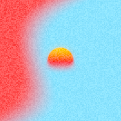
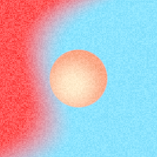
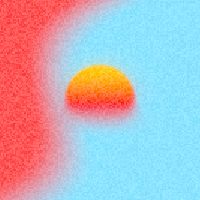
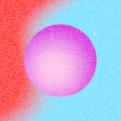

Новые фигуры больше не получают sunset. Сохранённые фигуры показывают обычный двухцветный градиент с прежней формой и положением.




Реальный Metal-рендер в симуляторе. Эта правка пока не устанавливалась на iPhone.